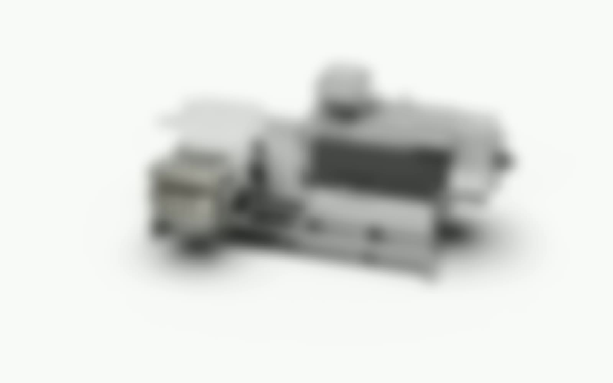
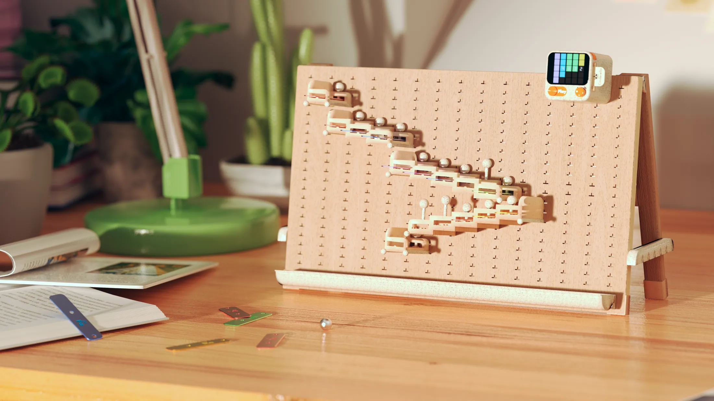
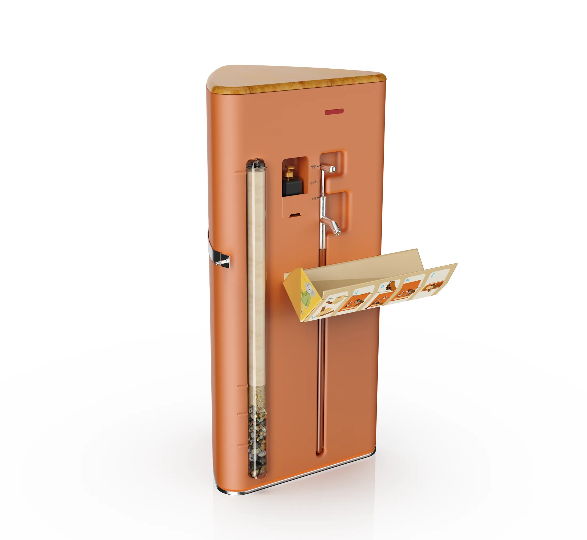
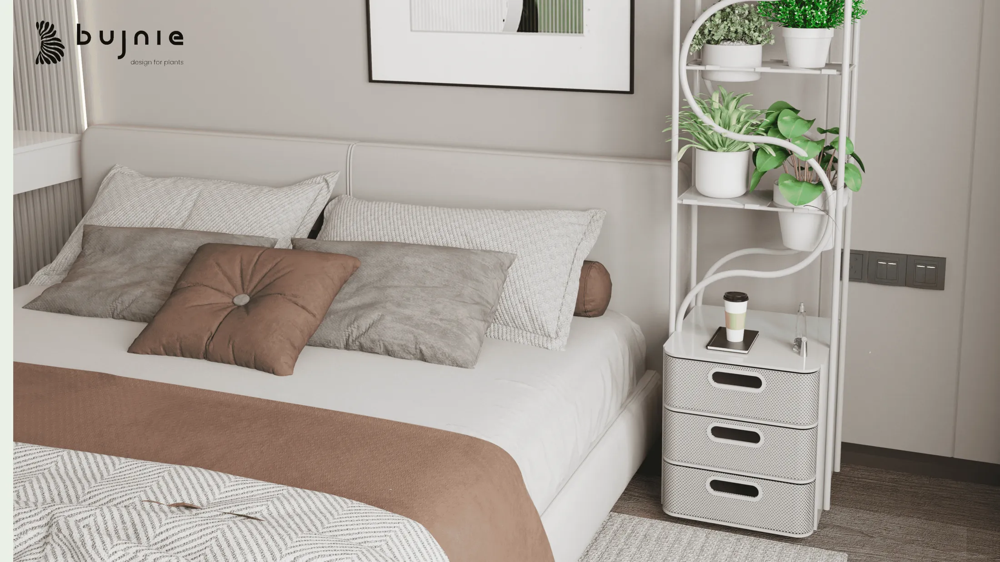

01
Industrial Pump Design Optimization
Professional
Confidential
Industrial Design / Engineering Collaboration / Product Development
Selected Work
Physical product design projects focused on product development, design optimization, user interaction, and manufacturable product systems.
Professional Work
Confidential professional work is represented only by permanently obscured static previews. Original files and proprietary details remain offline.

01
Selected Academic & Concept Work
Academic, studio, personal, and award-recognized concept projects selected for product thinking, research, and visual communication quality.



